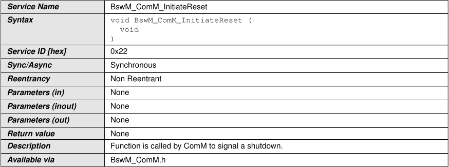
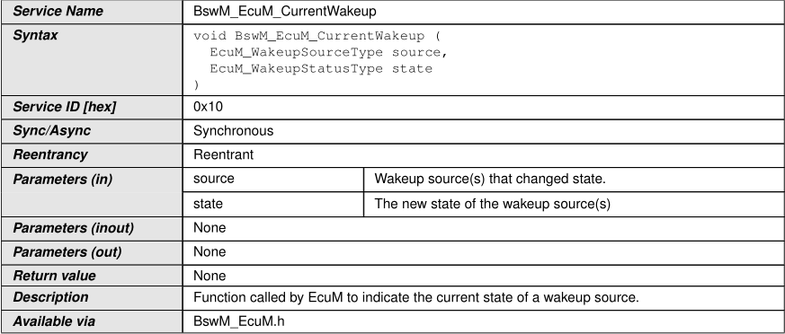
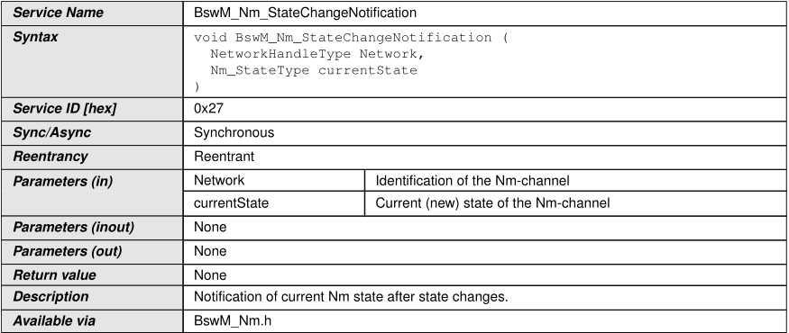
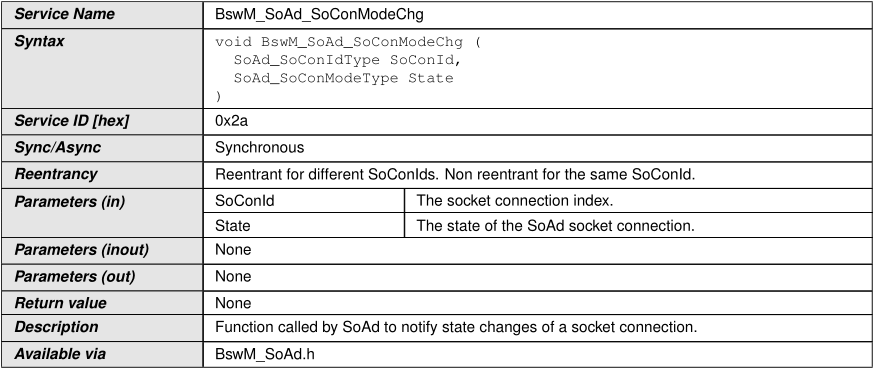

API
API specification¶
Type definitions¶
BswM_ConfigType¶
BswM_ModeType¶
BswM_UserType¶
Function definitions¶
BswM_BswMPartitionRestarted¶
BswM_CanSM_CurrentState¶
BswM_ComM_CurrentMode¶
BswM_ComM_CurrentPNCMode¶
BswM_ComM_InitiateReset¶

BswM_Dcm_ApplicationUpdated¶
BswM_Dcm_CommunicationMode_CurrentState¶
BswM_Deinit¶
BswM_EcuM_CurrentState¶
BswM_EcuM_CurrentWakeup¶

BswM_EcuM_RequestedState¶
BswM_EthIf_PortGroupLinkStateChg¶
BswM_EthSM_CurrentState¶
BswM_FrSM_CurrentState¶
BswM_GetVersionInfo¶
BswM_Init¶

BswM_J1939DcmBroadcastStatus¶
BswM_J1939Nm_StateChangeNotification¶
BswM_LinSM_CurrentSchedule¶

BswM_LinSM_CurrentState¶

BswM_LinTp_RequestMode¶
BswM_Nm_CarWakeUpIndication¶
BswM_Nm_StateChangeNotification¶

BswM_NvM_CurrentBlockMode¶
BswM_NvM_CurrentJobMode¶

BswM_RequestMode¶

BswM_Sd_ClientServiceCurrentState¶
BswM_Sd_ConsumedEventGroupCurrentState¶
BswM_Sd_EventHandlerCurrentState¶
BswM_SoAd_SoConModeChg¶

Scheduled functions¶
BswM_MainFunction¶
Service Interfaces¶
Ports¶
BswM_modeNotificationPort¶
BswM_modeRequestPort¶
BswM_modeSwitchPort¶
API to Request Port Mappings¶
| API | Request Port | API/ Config-parameter pairs |
|---|---|---|
| BswM_BswMPartitionRestarted | BswMPartitionRestarted | |
| BswM_CanSM_CurrentState | BswMCanSMIndication | Network / BswMCanSMChan- nelRef |
| BswM_ComM_CurrentMode | BswMComMIndication | Network / BswMComMChannel- Ref |
| BswM_ComM_CurrentPNCMode | BswMComMPncRequest | PNC /BswMComMPncRef |
| BswM_ComM_InitiateReset | BswMComMInitiateReset | |
| BswM_Dcm_ApplicationUpdated | BswMDcmApplicationUpdated Indication | |
| BswM_Dcm_CommunicationMode_CurrentState | BswMDcmComModeRequest | Network / BswMDcmComM ChannelRef |
| BswM_EcuM_CurrentState | BswMEcuMIndication | |
| BswM_EcuM_CurrentWakeup | BswMEcuMWakeupSource | source / BswMEcuMWakeupSr- cRef |
| BswM_EcuM_RequestedState | BswMEcuMRUNRequestIndica- tion | State / BswMEcuMRUNRequest ProtocolPort |
| BswM_Ethlf_PortGroupLinkStateChg | BswMEthlfPortGroupLinkState- Chg | PortGroupldx/ BswMEthlf SwitchPortGroupRef |
| BswM_EthSM_CurrentState | BswMEthSMIndication | Network /BswMEthSMChannel- Ref |
| BswM_FrSM_CurrentState | BswMFrSMIndication | Network / BswMFrSMChannel- Ref |
| BswM_J1939DcmBroadcastStatus | BswMJ1939DcmBroadcast Status | NetworkMask / BswMJ1939 DcmChannelRef |
| BswM_J1939Nm_StateChangeNotification | BswMJ1939NmIndication | Network / BswMJ1939NmChan- nelRef,Node / BswMJ1939Nm NodeRef |
| BswM_LinSM_CurrentSchedule | BswMLinSchedulelndication | Network / BswMLinSMChannel Ref |
| BswM_LinSM_CurrentState | BswMLinSMIndication | Network / BswMLinSMChannel Ref |
| BswM_LinTp_RequestMode | BswMLinTpModeRequest | Network / BswMLinTpChannel Ref |
| BswM_Nm_CarWakeUpIndication | BswMNmCarWakeUpIndication | |
| BswM_Nm_StateChangeNotification | BswMNmStateChangeNotifica- tion | Network / BswMNmChannelRef |
| BswM_NvM_CurrentBlockMode | BswMNvMRequest | Block/ BswMNvMBlockRef |
| BswM_NvM_CurrentJobMode | BswMNvMJobModelndication | MultiBlockRequest / BswMNvm Service |
| BswM_RequestMode | BswMGenericRequest | requesting user / BswMMode Requesterld |
| BswM_Sd_ClientServiceCurrentState | BswMSdClientServiceCurrent State | SdClientServiceHandleld BswMSdClientMethodsRef |
| BswM_Sd_ConsumedEventGroupCurrentState | BswMSdConsumedEventGroup CurrentState | SdConsumedEventGroupHan- dleld /BswMSdConsumedEvent GroupRef |
| BswM_Sd_EventHandlerCurrentState | BswMSdEventHandlerCurrent State | SdEventHandlerHandleld BswMSdEventHandlerRef |